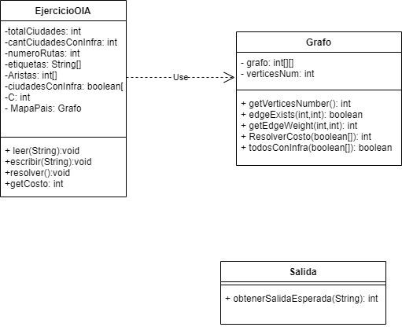

Evaluación de Aprendizajes 2
16 y 17 de Noviembre de 2020
Estudiante: SESAN, Juan Ignacio (42393167)
Fecha de entrega: Tue Nov 17 22:14:16 ART 2020
Ejercicio 1
Se entrega en forma de código
Complejidad: O(n³)
Ejercicio 2
package unlam.progava;
import unlam.progava.utils.Color;
import unlam.progava.utils.Complejidad;
public class Ejercicio2 {
private final int alto = 8;
private final int largoPatron = 12;
public Complejidad complejidadDeMiSolucion() {
return Complejidad.LINEAL;
}
public Color[][] pintarEstela(int n) {
if (n <= alto)
throw new RuntimeException("N (largo de la estela) debe ser mayor que " + alto);
Color[][] patron = obtenerPatron();
Color[][] lienzo = new Color[alto][n];
int indicePatron = 0;
for (int indiceLienzo = 0; indiceLienzo < n; indiceLienzo++) {
lienzo[0][indiceLienzo] = patron[0][indicePatron];
lienzo[1][indiceLienzo] = patron[1][indicePatron];
lienzo[2][indiceLienzo] = patron[2][indicePatron];
lienzo[3][indiceLienzo] = patron[3][indicePatron];
lienzo[4][indiceLienzo] = patron[4][indicePatron];
lienzo[5][indiceLienzo] = patron[5][indicePatron];
lienzo[6][indiceLienzo] = patron[6][indicePatron];
lienzo[7][indiceLienzo] = patron[7][indicePatron];
indicePatron++;
if(indicePatron == largoPatron)
indicePatron=0;
}
return lienzo;
}
private Color[][] obtenerPatron() {
Color[][] patron = {
{ Color.NEGRO, Color.NEGRO, Color.NEGRO, Color.NEGRO, Color.NEGRO, Color.NEGRO, Color.ROJO, Color.ROJO,
Color.ROJO, Color.NEGRO, Color.NEGRO, Color.NEGRO },
{ Color.NEGRO, Color.NEGRO, Color.NEGRO, Color.ROJO, Color.ROJO, Color.ROJO, Color.NARANJA,
Color.NARANJA, Color.NARANJA, Color.ROJO, Color.ROJO, Color.ROJO },
{ Color.ROJO, Color.ROJO, Color.ROJO, Color.NARANJA, Color.NARANJA, Color.NARANJA, Color.AMARILLO,
Color.AMARILLO, Color.AMARILLO, Color.NARANJA, Color.NARANJA, Color.NARANJA },
{ Color.NARANJA, Color.NARANJA, Color.NARANJA, Color.AMARILLO, Color.AMARILLO, Color.AMARILLO,
Color.VERDE, Color.VERDE, Color.VERDE, Color.AMARILLO, Color.AMARILLO, Color.AMARILLO },
{ Color.AMARILLO, Color.AMARILLO, Color.AMARILLO, Color.VERDE, Color.VERDE, Color.VERDE, Color.AZUL,
Color.AZUL, Color.AZUL, Color.VERDE, Color.VERDE, Color.VERDE },
{ Color.VERDE, Color.VERDE, Color.VERDE, Color.AZUL, Color.AZUL, Color.AZUL, Color.VIOLETA,
Color.VIOLETA, Color.VIOLETA, Color.AZUL, Color.AZUL, Color.AZUL },
{ Color.AZUL, Color.AZUL, Color.AZUL, Color.VIOLETA, Color.VIOLETA, Color.VIOLETA, Color.NEGRO,
Color.NEGRO, Color.NEGRO, Color.VIOLETA, Color.VIOLETA, Color.VIOLETA },
{ Color.VIOLETA, Color.VIOLETA, Color.VIOLETA, Color.NEGRO, Color.NEGRO, Color.NEGRO, Color.NEGRO,
Color.NEGRO, Color.NEGRO, Color.NEGRO, Color.NEGRO, Color.NEGRO }, };
// Hice ctrl shift f y lo desformateo perdon, (si pongo ctrl z vuelve de a uno)
return patron;
}
}
Complejidad: O(n)
Ejercicio 3
-
22
-
[B, D, E, G, F, H, C, A]
-
A-D
Ejercicio 4
-
5
Dado que todos los vertices tienen grado 4 y hay 5 aristas en total, todas los vertices son adyacentes entre si por lo tanto deben todas tener un color distinto al ser 5 vertices su Numero Cromatico sera 5.Esto tambien cumple que el nro cromatico debe ser <= al GradoMAX+1 como todas las aristas tienen el mismo grado se puede poner solamente =en este caso nro cromatico = 4+1
-
4
En este caso el grMax asignado a es 5 (en el vertice A) y la cantidad de Vertices es 6 por lo tanto A es adyacente de todos, los demas nodos tienen grado 4 (estos tendran 1 solo vertice no adyacente), 3(estos 2) y 2 (estos 3) Los vertices de grado 4 deberan tener un color propio, el de grado 3 al estar conectado con ambos de grado 4, tambien debera tener un color propio Los de grado 2 estan conectados a A(el nodo que conecta con todos) y a uno a los de Grado 4 por lo tanto podra tener el color del grado 3 o el grado 4 con el que no es adyacente.
-
3
Dado que todos los vertices tienen grado 4 y hay 6 vertices en el grafo cada vertice podra tener el mismo color que un solo vertice dado que 5 vertices (sin contarse a si mismo) - Grado 4 es 1 vertice que no sera adyacente del Vertice X que elijamos por lo tanto 6 vertices totales / 2 par de vertices no adyacentes = 3-> nro cromatico.
Firma: 7CDE4EA5C1656E84A4CCD05FF992DCA8